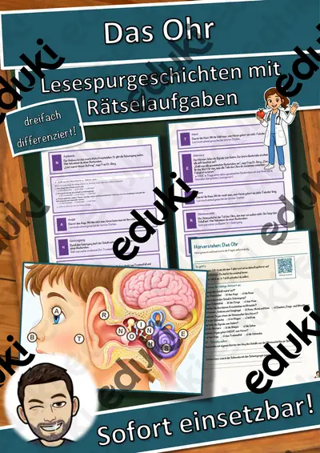
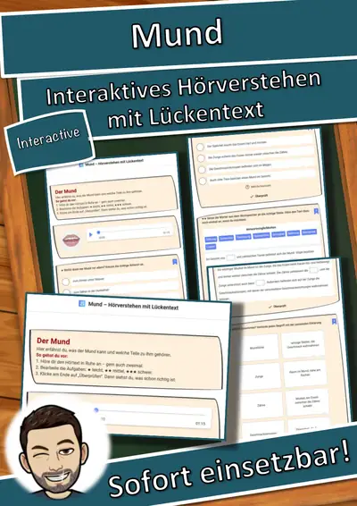

Die Schnecke – Lesespurgeschichte mit Rätselaufgaben (Klasse 5)
Begib dich mit deiner Klasse auf eine spannende Lesespur rund um die Schnecke! Die Kinder erkunden mit der Naturforscherin Frida die wichtigsten Körperteile einer Schnecke – von den Fühlern mit den Augen über Mund und Kriechfuß bis zu Atemloch, Mantel und Haus. Ganz nebenbei lernen sie, wie das Weichtier frisst, kriecht, atmet und sich in seinem Haus schützt und was es von anderen Gartentieren unterscheidet. Am Ende jedes Abschnitts verrät ein Hinweis den nächsten Ort (einen Körperteil) auf dem Schnecken-Plan – nur wer richtig liest und mitdenkt, findet den Weg und sammelt alle geheimen Buchstaben zum Lösungswort.
Diese Lesespurgeschichte verbindet motivierendes, sinnentnehmendes Lesen mit echtem Sachwissen über die Schnecke und schult zugleich das genaue Arbeiten. Das Material ist SOFORT EINSETZBAR und in DREI DIFFERENZIERUNGSSTUFEN (leicht ★ / mittel ★★ / schwer ★★★) angelegt, sodass alle Kinder einer Klasse am selben Thema arbeiten können.WICHTIG: Das komplette Material ist sowohl in FARBE als auch in SCHWARZ-WEISS enthalten – ideal zum Sparen von Druckkosten.DAS IST ENTHALTEN
- Lesespurgeschichte in 3 Niveaus (leicht, mittel, schwer)
- farbiger Schnecken-Plan als Suchkarte
- Hörverstehen mit QR-Code zur MP3 (Kinder hören selbstständig mit Kopfhörern)
- vier Aufträge auf dem Weg: ein Verbinde-Rätsel, ein Schnecken-Quiz, eine Rechenaufgabe und ein Steckbrief
- Rätselseite (Wörter-Suchsel + Wissensfragen)
- Ausmalbild zum Thema
- ausführliches Lösungsblatt für die Lehrkraft
- alles zusätzlich als komplette Schwarz-Weiß-VarianteSO FUNKTIONIERT DIE LESESPURDie Kinder lesen ab START, entnehmen dem Text einen Hinweis auf einen Ort (einen Körperteil), suchen ihn auf dem Plan und lesen bei dieser Station weiter. An jeder richtigen Station gibt es einen Sammelbuchstaben. Eingebaute Sackgassen (Käfer, Ameise, Regenwurm, Spinne) dienen der Selbstkontrolle und machen deutlich, dass diese Tiere zwar auch im Garten leben, aber keine Körperteile der Schnecke sind. Am Ende werden die gesammelten Buchstaben umgestellt und ergeben ein geheimes Lösungswort. (Die Lösungen sind selbstverständlich nur im Lösungsblatt für die Lehrkraft enthalten.)INHALTLICHER SCHWERPUNKTKörperbau und Lebensweise der Schnecke: die vier Fühler zum Tasten und Riechen, die Augen an den Fühlerspitzen, der Mund mit der Raspelzunge, der breite Kriechfuß, das Atemloch, der Mantel, der das Haus bildet, und das feste, spiralig gedrehte Schneckenhaus. Dazu die langsame Fortbewegung und der Schutz durch das Haus sowie der Unterschied zwischen der Schnecke und anderen Gartentieren wie Käfer, Ameise, Regenwurm und Spinne. Das Material stellt die Zusammenhänge sachlich und kindgerecht dar.ABGEDECKTER LEHRPLAN (Klasse 5)
- Biologie – Die Schnecke: Körperteile und ihre Aufgaben, Weichtier ohne Skelett, Fortbewegung mit dem Kriechfuß, Fressen mit der Raspelzunge, Schutz durch das Haus, Unterschied zu anderen Tiergruppen.
- Deutsch – Lesen mit Texten und Medien umgehen: Lesestrategien anwenden, Texten gezielt Informationen entnehmen, sinnentnehmend und selektiv lesen; Selbstkontrolle und Lesemotivation durch die Lesespur; Zuhören: einem Sachhörtext konzentriert folgen und Wesentliches entnehmen (Hörverstehen mit MP3).
- Mathematik – Rechnen im Sachzusammenhang (Zahlen rund um Schnecken und den Garten).
- Fächerübergreifend / Kompetenzen: biologisches Grundverständnis, genaues Lesen und Prüfen, Konzentration und Ausdauer, kreatives Gestalten (Ausmalbild).
Geeignet für Freiarbeit, Stationenlernen, Vertretungsstunden, Wochenplan und Homeschooling. Klassenstufe 5 (differenziert einsetzbar auch in angrenzenden Jahrgangsstufen).
Ähnliche Materialien
Schnecken – Hörverstehen mit Lückentext (interaktiv)

Schnecken Lückentext mit Wortspeicher Hörverstehen und Suchsel

Warm eingepackt – wie Dämmung ein Haus schützt – Lesespurgeschichte mit Rätselaufgaben (Klasse 8)

Ohr Lückentext mit Wortspeicher Hörverstehen und Suchsel

Mund Lückentext mit Wortspeicher Hörverstehen und Suchsel

Das Ohr – Lesespurgeschichte mit Rätselaufgaben (Klasse 7)

Mund – Hörverstehen mit Lückentext (interaktiv)